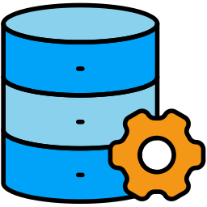
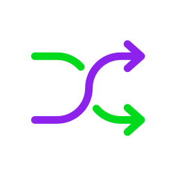
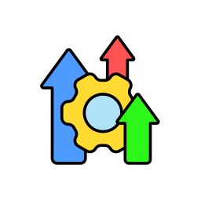

Simplicity
JavaScript has a• relatively simple syntax inspired by languages like Java and C, making it one of the easiest programming languages for beginners to learnand read
JavaScript (JS) is a programming language and core technology of the Web, alongside HTML and CSS. It was created by Brendan Eich in 1995. As of 2025, the overwhelming majority of websites (98.9%) uses JavaScript on the client side for webpage behavior. JavaScript. Screenshot of JavaScript source code.
JavaScript (JS) is a lightweight, interpreted scripting language that creates dynamic and interactive content on websites. It handles everything from simple animations and interactive maps to complex web applications. While HTML provides the structure and CSS adjusts the styling, JavaScript makes websites responsive to user actions.
JavaScript’s syntax is the set of rules that define how to
write JavaScript code. Understanding these basics is the first step to writing functional code.
Here is a simple “Hello, World!” example in JavaScript.
This code creates a function that shows an alert pop-up in the browser:
To see this code in action, copy and paste it into an HTML file, save it, and open it with any web browser. Here’s a
complete template you can use:
When you open this HTML file in your browser, the JavaScript inside the <script> tags runs
automatically, and you will see the “Hello, World!” pop-up appear.
The main features of JavaScript are its versatility and efficiency in creating dynamic web content.
These characteristics make it a cornerstone of modern web development.
JavaScript doesn’t need compilation
before running. Consequently, web browsers
interpret the code directly, and development
and testing is faster.

Variables in JavaScript
don’t have a fixed data type.
You can assign a number to a
variable and later reassign a
string to the same
variable, offering great flexibility.
JavaScript responds to user actions,
known as events.
These include clicks, mouse movements,
or key presses, enabling highly
interactive user experiences.
JavaScript works with both
object-oriented programming (OOP), which
organizes code around objects, and
functional programming paradigms,
which treat functions as first-class citizens.
This hybrid nature lets developers choose the best
approach for their needs.
The primary advantage of JavaScript is its ability to create rich, interactive user interfaces that run directly in the browser.
This client-side execution leads to several key benefits.
JavaScript has a• relatively simple syntax inspired by languages like Java and C, making it one of the easiest programming languages for beginners to learnand read
Since it runs on the client side, JavaScript can provide an immediate response to user actions without a round trip to the server. For instance, when you fill out a contact form and enter an invalid email address, the instant error message you see is JavaScript at work – no need to wait for the page to reload
Originally designed for front-end development, JavaScript is now used everywhere. It can power back-end servers with Node.js, create mobile apps for iOS and Android with frameworks like React Native, and even build desktop applications with Electron
JavaScript has a massive and active community. According to the 2025 Stack Overflow Developer Survey, it remains the most used programming language. For developers, this means if you ever get stuck, a solution is likely just a quick search away on a forum or in a tutorial

By handling tasks in the browser, JavaScript reduces the work your server has to do. The same form validation example applies here: the user’s browser checks for errors first, so the server only processes valid submissions, saving significant resources
ECMA International updates ECMAScript regularly.ES16 added new Set methods.These include Set.intersection, Set.difference, and Set.symmetricDifference.They let developers compare sets quickly. They also help handle unique data more efficiently.
The main disadvantage of JavaScript is that its client-side execution can introduce security vulnerabilities
and browser inconsistencies.
Different web browsers interpret JavaScript code slightly differently. Developers sometimes need to add extra code to keep websites working consistently across major browsers like Chrome, Firefox, and Safari
Because the code runs on the user’s computer, attackers can exploit it for malicious purposes if developers don’t secure the application properly. For instance, cross-site scripting (XSS) attacks can run harmful code in a client’s browser when a website lacks proper safeguards
Sometimes, an error in JavaScript code fails silently, meaning the script stops working without showing an error message. This makes finding and fixing bugs more difficult compared to some server-side languages

JavaScript automatically converts data types in unexpected ways during operations, leading to hidden bugs that are difficult to trace. Code that appears correct can produce strange results because the language silently changes data types behind the scenes

JavaScript runs on a single thread in the browser. If a heavy function or long loop executes, it blocks the entire page, making it unresponsive. Although Web Workers provide a workaround, managing concurrency is still more challenging compared to multi-threaded languages
JavaScript runs inside a browser sandbox and has no direct access to system resources like the file system, printers, serial ports, etc. While this is good for security, it makes it impossible to build desktop apps or system tools without additional technologies (Node.js, Electron, etc.)
JavaScript is a versatile language with applications
in nearly every area of software development, from the web browser to the server and beyond.
JavaScript’s ecosystem includes thousands of frameworks and libraries that provide pre-written code to help developers build applications
more quickly and efficiently.
Developed and maintained by Meta, React is a front-end library for building user interfaces. Its main innovation is a component-based architecture, which lets you build complex UIs by combining small, isolated pieces of code called components. Think of it like building with Lego bricks – each brick is simple on its own, but you can combine them to create anything. This approach makes code highly reusable and easier to manage, which is why React is extremely popular for developing SPAs
Angular is a comprehensive front-end framework developed and maintained by Google. Unlike React, which is
just a library for the UI, Angular is a full-featured platform. It provides a structured set of rules and tools for building large, enterprise-scale applications. Angular uses TypeScript, which adds type checking to JavaScript
to help catch errors during development.
Vue.js stands out for its simplicity and approachability. Many developers consider it the easiest of the “big three” (React, Angular, Vue) for beginners to learn. Vue is a progressive framework, meaning you can use it to enhance
a small part of an existing website or scale it up to build a complex SPA from scratch. Its flexibility and excellent documentation have made it a favorite among many developers.

Unlike the others, Node.js is not a front-end framework. It is a back-end runtime environment that runs JavaScript on a server. Before Node.js, developers could only use JavaScript in the browser. Now, developers use Node.js to build entire web servers, create APIs, and connect to databases, all with the same language they use for the front end. This ability to use one language for both client and server is a major advantage.

Popular with the motto ‘write less, do more,’ jQuery was incredibly influential for many years. It simplified tasks like handling events, animating elements, and making API requests. While modern frameworks like React and Vue have replaced jQuery in most new projects, millions of existing websites and content management systems (like WordPress) still rely on it.
Now that you understand what JavaScript is, the next logical step is to put that knowledge into practice.
The way you add JavaScript to a website depends on the platform you're using.
We have two guides to help you get started:
Add JavaScript without breaking your theme
function add_custom_js() {
wp_enqueue_script(
'custom-script',
get_stylesheet_directory_uri() . '/js/script.js',
array(),
'1.0',
true
);
}
add_action('wp_enqueue_scripts', 'add_custom_js');
HTML / CSS / JS — full control
<!-- Inline example -->
<script>
console.log("Hello from JS!");
</script>
<!-- External file (recommended) -->
<script src="js/script.js" defer></script>